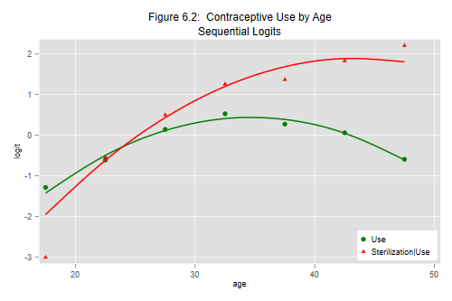

We now fit the hierarchical logit model described in the notes. Because the term hierarchical has come to be closely associated with multilevel models, I now prefer calling this model the sequential logit model, reflecting the fact that the model proceeds as if decisions were made in a sequence of stages.
This model is not to be confused with the nested logit model, a term used in econometrics to refer to a random-utility model where the errors within subsets of choices are correlated and the predictors include alternative-specific variables. Our approach is much simpler, but doesn’t have a strict utility maximization interpretation.
We assume that women first decide whether to use a method or not, and model this choice using a conventional logit model. We then focus exclusively on women who use a method, and model their choice of sterilization or another method using another conventional logit model. (I told you this would be simpler :)
We continue to use the same dataset as in the previous sections. All we need to get started is a variable to identify users of contraception.
. use https://grodri.github.io/datasets/elsalvador1985, clear (Contraceptive Use by Age. Currently Married Women. El Salvador, 1985) . gen age = 12.5 + 5*ageg . gen agesq = age^2 . gen use = cuse < 3
We then model the logit of the probability of using contraception as a quadratic function of age:
. logit use age agesq [fw=cases]
Iteration 0: log likelihood = -2188.859
Iteration 1: log likelihood = -2082.7995
Iteration 2: log likelihood = -2082.4993
Iteration 3: log likelihood = -2082.4993
Logistic regression Number of obs = 3,165
LR chi2(2) = 212.72
Prob > chi2 = 0.0000
Log likelihood = -2082.4993 Pseudo R2 = 0.0486
─────────────┬────────────────────────────────────────────────────────────────
use │ Coefficient Std. err. z P>|z| [95% conf. interval]
─────────────┼────────────────────────────────────────────────────────────────
age │ .4397399 .0330984 13.29 0.000 .3748683 .5046115
agesq │ -.0063448 .0004992 -12.71 0.000 -.0073231 -.0053664
_cons │ -7.180362 .5215582 -13.77 0.000 -8.202598 -6.158127
─────────────┴────────────────────────────────────────────────────────────────
. di -0.5*_b[age]/_b[agesq]
34.653835
. scalar ll_u = e(ll)
. predict fit_u, xb
We have stored the log-likelihood and predicted the probability of using a contraceptive method for each age group for later use.
The estimates indicate that the odds of using contraception (sterilization or other method as opposed to no method) increase with age to reach a maximum at 34.7 and then decline. This is more easily appreciated in a graph, which we will do below.
For the second step we look just at current users, and model the logit of the conditional probability of being sterilized given that the woman uses contraception as a quadratic function of age:
. gen ster = cuse == 1
. logit ster age agesq [fw=cases] if use
Iteration 0: log likelihood = -944.59148
Iteration 1: log likelihood = -800.66624
Iteration 2: log likelihood = -798.84996
Iteration 3: log likelihood = -798.84632
Iteration 4: log likelihood = -798.84632
Logistic regression Number of obs = 1,494
LR chi2(2) = 291.49
Prob > chi2 = 0.0000
Log likelihood = -798.84632 Pseudo R2 = 0.1543
─────────────┬────────────────────────────────────────────────────────────────
ster │ Coefficient Std. err. z P>|z| [95% conf. interval]
─────────────┼────────────────────────────────────────────────────────────────
age │ .4942454 .0667965 7.40 0.000 .3633266 .6251642
agesq │ -.0056737 .0010108 -5.61 0.000 -.0076548 -.0036926
_cons │ -8.868692 1.065769 -8.32 0.000 -10.95756 -6.779822
─────────────┴────────────────────────────────────────────────────────────────
. di -0.5*_b[age]/_b[agesq]
43.555674
. scalar ll_s = e(ll)
. predict fit_s, xb
Again we have stored the log-likelihood and predicted the conditional probabilities for each age group for later use.
The estimates indicate that the odds of begin sterilized among users (sterilization as opposed to other method) increase with age, but at a decreasing rate, reaching a maximum at 43.6. Again, a picture is worth a tousand words and we will plot these curves below.
To obtain the log-likehood for the sequential model we simply add the log-likelihoods for each stage. We can then compare this to the log-likelihood for a saturated multinomial model to get a sequential logit deviance.
. scalar ll_seq = ll_s + ll_u . quietly mlogit cuse i.ageg [fw=cases], base(3) . scalar dev = 2*(e(ll) - ll_seq) . di "deviance =",%6.2f dev,"df =", 14 - 6, "p-value =", /// > %5.3f chi2tail(8, dev) deviance = 16.89 df = 8 p-value = 0.031
The deviance of 16.89 on 8 d.f. is a bit better (lower) than the comparable multinomial logit model of Section 6.2 with linear and quadratic effects of age, which was ??? although the difference is small and we have some evidence that the model does not fit the data. We will build a plot to examine where the lack of fit comes from.
We now produce a figure similar to 6.1, but for the sequential logit model. We could produce observed logits from logit models treating age as a factor with seven levels, but we can easily compute these “by hand”.
. gen obs_u = log((cases[_n]+cases[_n+1])/cases[_n+2]) if cuse==1 (14 missing values generated) . gen obs_s = log( cases[_n]/cases[_n+1]) if cuse==1 (14 missing values generated)
We can then plot observed versus fitted logits for each equation:
. graph twoway (scatter obs_u age, mc(green)) ///
> (scatter obs_s age, mc(red) ms(t)) ///
> (mspline fit_u age, bands(7) lc(green) lw(medthick)) ///
> (mspline fit_s age, bands(7) lc(red) lw(medthick) ) ///
> , title("Figure 6.2: Contraceptive Use by Age") ///
> subtitle("Sequential Logits") ytitle(logit) ///
> legend(order (1 "Use" 2 "Sterilization|Use") ring(0) pos(5))
. graph export fig62.png, width(500) replace
file fig62.png saved as PNG format

We see that the two quadratics fit reasonably well, except for overestimating the probability of sterilization among contraceptive users at ages 15 to 19, a problem similar to that noted in the multinomial logit model. We could easily remedy this deficiency by adding a dummy variable for teenagers in the second-stage model.
Exercise. In the next section we will study ordered logit models. You may want to try fitting an ordered logit model to this dataset treating the three choices as ordered in terms of contraceptive effectiveness.
Updated fall 2022